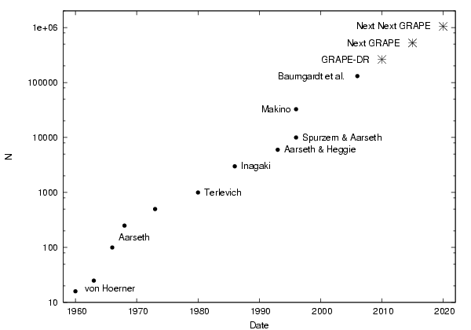

The Art of Computational Science
Maya Open Lab

|
|
The Art of Computational ScienceMaya Open Lab |
|
| © 2003-2006 Piet Hut and Jun Makino | Back to ACS home page. |
When two or more stars in such a dense stellar system collide, their merger remnant looks and evolves quite different from garden variety stars. While normal stars start there life at the main sequence, a merger remnant is born in a rather different part of the Hertzsprung-Russell diagram. Even after an initial phase in which such a remnant settles into thermal equilibrium, the unusual mix of chemical composition as a function of radius will make such a stars markedly different in its evolution.
Observationally, some of these merger remnants will show up in the H-R diagram as blue stragglers: they are bluer than the turn-off, giving the semblance of being younger that the age of the other stars in their environment. And in a sense, they are younger, as counted from their collisional formation, even though their progenitors (or in the case of multiple collisions, their ancestors) can share the same age as the majority of stars in the cluster.
There is great interest in studying the weird variety of single stars and especially binary stars, that can be formed in dense stellar systems. Examples are Low-Mass X-ray Binaries and Millisecond Pulsars in orbit around other stars. Both types of systems occur in globular clusters with a far larger abundance than in the rest of the galaxy, an indication that most of them are formed through collisions or at least close encounters. In such encounters members in a binary can be swapped in a three-body or four-body encounter with other single stars or binaries.
The optical observations of blue stragglers, X-ray observations of compact binaries, and radio observations of millisecond pulsars, are just a few examples of the observational wealth of data that is currently available. The obvious way to interpret these data is to model a dense stellar system in realistic detail, through large-scale simulations, taking into account all the relevant physics involved.
The main goal of the Maya project is to provide detailed models both for the way stars interact locally through encounters and collisions, and for the way a whole star cluster evolves under the influence of such processes. In order to accomplish this, we will need to couple a rather heterogeneous collection of software modules, each describing different physical problems, such as stellar dynamics, stellar evolution, and stellar hydrodynamics. Let us look at each of these three topics, in turn.
Unlike the four-color problem, though, we don't expect to ever `solve' the gravitational N-body problem, for arbitrary N and even for N = 2, where we do have analytic solutions, we still follow tradition in calling this the two-body problem (strictly speaking, this probably should be called the two-body system). Why would someone want to study the gravitational million-body problem? There are at least four quite different motivations, centering on the fields of astronomy, theoretical physics, computational physics, and mathematics. We summarize these four here briefly; for a lenghtier introduction, see part I of The Gravitational Million-Body Problem (Heggie & Hut, 2003).
For astronomers, the study of dense stellar systems forms the most challenging area of stellar physics. Systems are called dense if the stars are so closely packed in space that they will occasionally suffer close encounters and even physical collisions. Two examples of dense stellar systems are globular clusters and galactic nuclei. In our own Milky Way galaxy, at least, the typical number of stars in a globular cluster lies between 105 and 106, and the number of stars directly influenced by the massive central black hole is between 106 and 107. So even though our galaxy as a whole contains a hundred billion stars, the most interesting dense stellar systems in our galaxy can be described by the gravitational million-body problem.
For theoretical physicists, the study of self-gravitating systems of particles is challenging because such systems cannot be described by standard thermodynamic methods. The methods of plasma physics fail because gravitational forces, being attractive, are unshielded. Historically, many developments in mathematical physics, from perturbation theory to the discovery of chaos, were triggered by problems encountered in trying to acquire a deeper understanding of the N-body problem.
For computational physicists, the N-body problem is one of the prime examples of hard problems. In fact, it is not even clear whether any solution can be obtained reliably at all, given the exponential divergence of orbital solutions. And apart from such fundamental issues, running an N-body simulation with N > 10,000 is exceptionally time-consuming for even the fastest generally available computers. This has led to the development of special computers (the GRAPE family), whose main task is to solve this problem very quickly. Developing the software for running N-body simulations is equally challenging. In globular cluster simulations, we are confronted with length scales spanning the range from kilometers to parsecs (a factor of more than 1013), and with time scales spanning the range from milliseconds to the life time of the universe (a factor of more than 1020).
For mathematicians, there has been a steady flow of inspiration stemming from the N-body problem. When Newton laid the foundations of classical physics in the Principia, among the mathematical tools he deployed was the infinitesimal calculus, which he had invented for the purpose. The famous theorem of Kolmogorov, Arnold and Moser was foreshadowed by the work of C.L. Siegel in his book on Celestial Mechanics, a form of the gravitational N-body problem.
 Added to the figure are the predicted publication times for calculations with a quarter million, a half million and a million bodies, in 2010, 2015, and 2020, respectively, using future members of the GRAPE family. The slope of the lines connecting the dots can be explained roughly by combining Moore's law, which tells us that computer speed increases by a factor ten every five years, and the fact that the cost of N-body simulations grows proportional to N3, implying a doubling in the maximum N value approximately every four years.
During the sixties, a type of Cambrian explosion of different approaching to simulating the N-body problem took place. However, from 1970 onward, Sverre Aarseth's programs, from Nbody1 through Nbody6, have dominated the field. For a detailed description of these programs, see his book Gravitational N-Body Simulations.
It took a quarter century for a competitor to appear, the Kira code in the starlab environment, which has been used from around 1995 onward, to simulate large N-body systems. The current Maya project aims at developing the Kali code, as a third alternative to the Nbody6 and Kira codes. The main difference between Kali and previous code will be the extremely modular nature of Kali, made possible in part by the fact that Kali is written in a modern scripting language, Ruby, whereas Nobody6 is written in Fortran, and Kira is written in C++.
[the remainder of this introduction will be written soon]